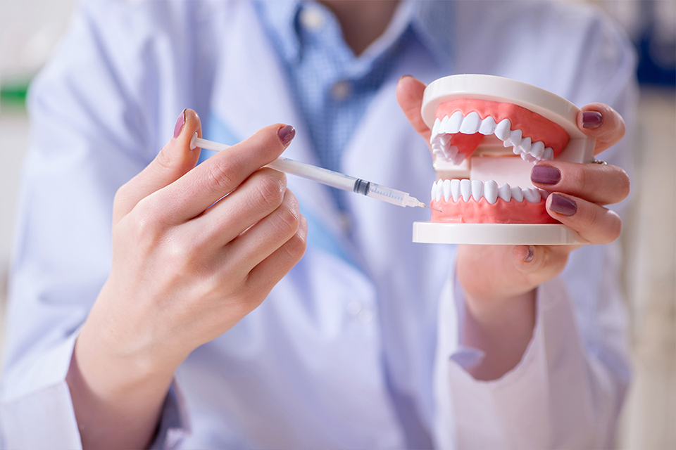

虫歯治療・根管治療
- TOP
- 虫歯治療・根管治療
虫歯は誰もが知っているお口の病気であり、多くの方が治療経験をお持ちのことでしょう。初期には自覚しにくいため、気づいたときにはかなり進行しており、歯を大きく削らなくてはならないケースも少なくありません。
虫歯から大切な歯を守るには、できるだけ早く適切な治療をすることが大切です。兵庫県赤穂市の歯医者「あきた歯科」では、できるだけ痛みの少ない虫歯治療に取り組んでいますので、治療を怖がらずお早めにご相談ください。

“できるだけ痛みの少ない虫歯治療”を実現するための麻酔
「歯医者は怖い」「虫歯治療が痛い」そんなマイナスイメージで歯科通院を先延ばしにしていませんか？ それでは、虫歯はどんどん悪化してしまいます。当院では患者様に少しでも早く虫歯治療を受けていただけるよう、さまざまな麻酔を用いて痛みの少ない治療をご提供できるよう努めています。
一人ひとりの状態に合わせた麻酔方法をご提案しますので、安心してご相談ください。
| 表面麻酔 | カートリッジウォーマー | 電動注射器 | ||
|---|---|---|---|---|
| 麻酔注射の前に、あらかじめ塗ったり、スプレーしたりして作用させる麻酔です。注射針が刺さるときの痛みをほとんど感じずにすみます。 | カートリッジウォーマー | 麻酔液が冷たいと、体内に入るときに刺激が生じます。カートリッジウォーマーであらかじめ体温と同程度に温めておくことで、麻酔液注入時の刺激を抑えます。 | 電動注射器 | 麻酔液の注入速度や圧力にムラが生じると、痛みを感じやすくなります。電動の注射器を使用すると、コンピューター制御により注射時の速度・圧力を一定に保てます。 |
| 極細の注射針 | 笑気麻酔 | 静脈内麻酔 | ||
|
注射針の針は、細ければ細いほど痛みを感じにくくなります。当院では極細の注射針を採用しています。 |
笑気麻酔 |
笑気ガスを吸入すると、意識はあるまま半分眠ったような状態に。治療への不安や恐怖感を和らげられ、リラックスして治療を受けられる麻酔です。 |
静脈内麻酔 |
精神安定剤を点滴で静脈に入れ、眠っている状態にした上で麻酔をする方法です。歯科恐怖症の方や嘔吐反射の強い方にもおすすめです。 |
～ご希望に応じ麻酔科医を呼ぶことも可能です～
歯科治療における麻酔は通常歯科医師が行いますが、当院では必要に応じ麻酔科医をお呼びすることも可能です。
麻酔は、治療時における患者様の痛みの負担を軽減するために用いますが、患者様の中には何らかの持病をお持ちの方も少なくありません。麻酔をする際には、ご病気によるお体の状態や常用薬などについて伺い、麻酔を用いるリスクを判断する必要があります。中でも静脈内沈静法では、全身管理が重要です。
そのような場合にも当院では、麻酔科医が患者様の状態をしっかりふまえた、適切な麻酔方法のご提案・ご提供が可能です。気になることがある場合は、何でもお気軽にご相談ください。
あきた歯科で行う虫歯の治療法
当院では一般的な歯科治療だけでなく、以下の治療法も導入しています。
| レーザー治療器（CO2レーザー） | 3Mix | |
|---|---|---|
|
レーザーを照射し、虫歯菌を殺菌します。また重度の虫歯に対する根管（こんかん）治療や、虫歯予防にも使用します。 虫歯治療以外にも、歯周病治療や歯ぐきの黒ずみ除去などに応用します。 |
3Mix |
虫歯菌に冒された歯質を少し削り、3種類の抗菌剤を塗布することで虫歯菌を死滅させる治療法です。最後に詰め物で歯を補います。 歯を削る量を抑えて治療時の痛みを軽減し、さらに神経を残せる確率を高めます。 |
虫歯の進行具合をご存じですか？
虫歯は、プラーク（歯垢）に棲みつく虫歯菌が食べ物に含まれる糖分をエサにして酸を出し、歯を溶かすことで起こります。ごく初期であれば、適切なブラッシングによって進行を止められることもありますが、進行してしまった虫歯は削るしかありません。
また一度虫歯になった歯は治療をしても再発しやすく、再治療をくり返せばいずれ歯を失ってしまいます。歯を守るには、できるだけ早く適切な治療を受けることが必要なのです。こちらでは、虫歯の進行具合をご紹介します。
| 進行段階 | 状態 | 治療法 |
|---|---|---|
| 【C0】 |
ごく初期の虫歯です。歯の表面を覆っているエナメル質がわずかに溶け、白濁します。 | 適切なブラッシングやフッ素塗布により、治癒が期待できる段階です。 |
| 【C1】 |
エナメル質がさらに溶け、茶色くなったり、黒ずんだりします。冷たいものがしみることがあります。 | 虫歯菌に冒された歯質を削り、レジン（歯科用プラスチック）で補います。 |
| 【C2】 |
エナメル質の内側にある、象牙質まで進行した虫歯です。甘いものもしみるようになります。 | 虫歯菌に冒された歯質を削り、詰め物で補います。 |
| 【C3】 |
歯の奥の神経まで達した虫歯です。何もしなくても、常に激しく痛みます。 | 虫歯菌に冒された神経を取り除く「根管（こんかん）治療」を行い、被せ物で補います。 |
| 【C4】 |
歯冠部分がほとんどなくなった状態です。神経が死んで一旦痛みはなくなりますが、歯根の先に膿が溜まると再び激しい痛みが現れます。 | ここまで悪化した虫歯は、多くの場合抜歯となります。その後はインプラントや入れ歯などで、歯の機能を回復させます。 |
Root treatment 根管治療で重度の虫歯を残しましょう
虫歯が重度まで進行して歯根にある根管（こんかん）に達し、その中の神経・血管が死んでしまうと、従来その歯は抜くしかありませんでした。しかし近年では、根管治療によって重度の虫歯を残せるようになりました。
兵庫県赤穂市の歯医者「あきた歯科」では、根管治療を行っています。「虫歯を悪化させてしまった……」という方も、あきらめず当院までご相談ください。
残せる歯をしっかり残す根管治療
根管治療とは、根管の中から死んでしまった神経や血管を取り除き、内部に細菌が残らないようしっかり洗浄・消毒して薬剤を充填する治療です。
根管は複雑に折れ曲がったり枝分かれしていたりするため治療の難易度が高く、精密性が求められます。しかし適切に根管治療ができれば、重度の虫歯も残すことが可能です。当院では根管治療によって、残せる歯をしっかり残します。
歯科用CT「ファインキューブ」で正確に状況を把握します
歯科用CTとは、レントゲンでは見えない部分まで、詳細な3D画像で取得できるCTです。当院では吉田製作所の歯科用CT「ファインキューブ」を導入し、根管治療をはじめとするさまざまな症例の診査・診断に役立てています。
| MERIT01 高精度な 3D画像の取得 |
MERIT02 正確な 画像診断 |
MERIT03 ナビゲーション機能で スムーズな位置付け |
||
|---|---|---|---|---|
|
根管や顎の骨の形態、神経・血管の位置など、レントゲンでは確認できない部分まで、高精度な3D画像で取得できます。 |
MERIT02 正確な 画像診断 |
患部をさまざまな角度から分析でき、歯の断層画像もリアルタイムで確認できます。患者様ご自身にも、画像を見ていただけます。 |
MERIT03 ナビゲーション機能で スムーズな位置付け |
ナビゲーション機能が備わっているため、位置付けもスムーズ。CCDカメラでの撮影時間も短縮できます。 |
| MERIT04 詳細な診査・診断につながる 高性能viewer |
MERIT05 体にやさしい 低被ばく線量 |
|---|---|
| 多くの機能が備わるデンタルソフトウェアが搭載されており、さまざまな角度から詳細な診査・診断が行えます。撮影後すぐに画像を確認することも可能です。 | 従来のCTに比べて、被ばく線量が大幅に少ないのも特徴です。体への負担が少ないため、安心していただけます。 |
ニッケルチタン(NiTi)ファイル
根管治療において、根管の中から神経・血管を取り除く場合には「ファイル」という器具を使用します。当院では、このファイルにニッケルチタン製のものを使用しています。ニッケルチタン（NiTi）ファイルは柔軟性があるため、複雑な形状の根管にもしっかりフィット。内部の汚れを残らず掻き出すことが可能です。
根管治療をしても、根管の中に汚れ（細菌）が残っていると再発してしまいます。当院ではニッケルチタンファイルを採用することで確実な汚れの除去に努め、根管治療の成功率を高めています。
根管治療の流れ
| STEP01 | STEP02 | STEP03 | STEP04 |
|---|---|---|---|
|
根管の中から、死んでしまった神経・血管をきれいに取り除きます。 |
根管の内部に細菌が残らないよう、徹底的に洗浄・消毒します。 |
すき間ができないよう注意しながら、歯根の先端まで薬剤をきっちり詰めます。 |
土台（コア）を立て、上部に被せ物を装着して完了です。 |